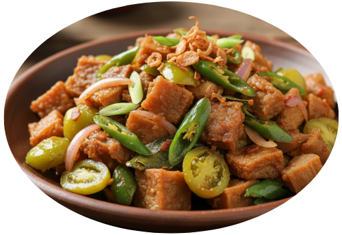
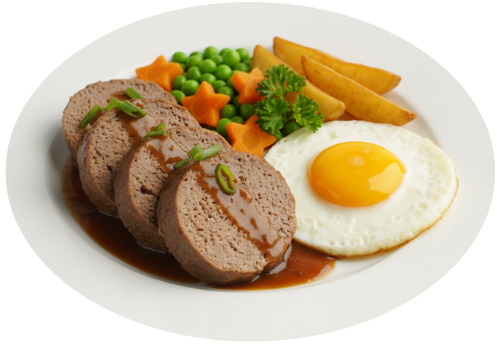
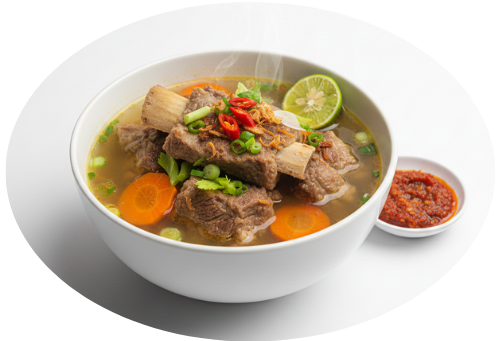
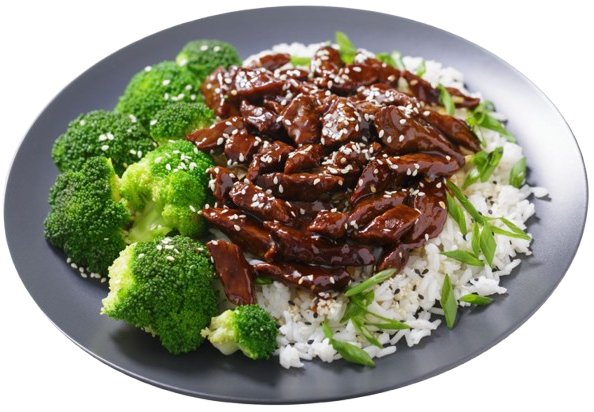

Olahan Daging
Rolade Daging Sapi
gurih dan lezat
♡

Oseng Kikil Sapi
pedas gurih dan kenyal
♡

Galantin Sapi
lembut dan gurih
♡
Sup Kacang Merah Daging
gurih dan menghangatkan
♡
Tongseng Sapi
gurih manis dan berempah
♡
Asem-Asem Daging
segar, asam gurih
♡

Sop Iga Sapi
gurih dan menghangatkan
♡
Tumis Daging Sapi
gurih dan sederhana
♡

Beef Teriyaki
manis gurih khas Jepang
♡